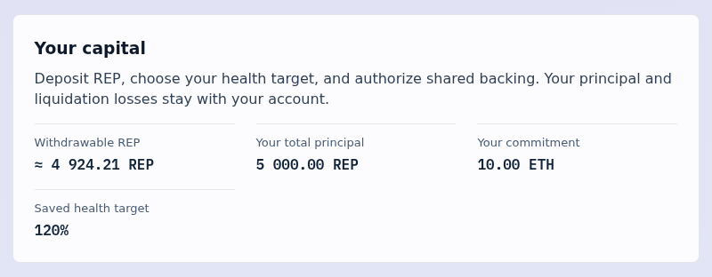
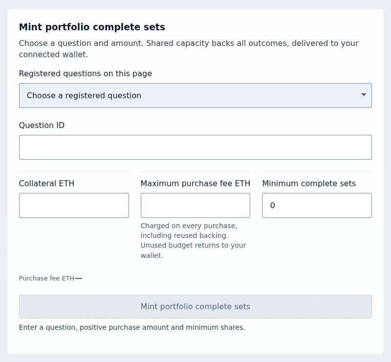

Tutorial
Back a shared portfolio and mint shares
Use the browser simulator to add 1 REP to a shared portfolio, then purchase complete sets for one of its questions. A complete set contains one share of every outcome. You will see your principal rise from 5,000 to 5,001 REP and receive shares in your simulated wallet.
Open the prepared portfolio
This exercise uses fake assets in a browser-local chain. From a prepared checkout, run bun run app:serve:statoblast and open http://localhost:12347/#/portfolios?simulate=1&genesis=yes&simScenario=portfolio. No wallet extension or live funds are needed. Wait for Price current in the Shared backing section.
The fixture supplies two registered questions, 5,000 REP of your principal, a 10 WETH commitment and a 120% saved health target. The portfolio shares that commitment across its questions; each question has separate outcome shares. See How Statoblast works for the economic model.

Add one REP
- In Deposit REP, enter
1in REP amount. If an approval is requested, approve the displayed amount and confirm its review. - Select Deposit REP, review the transaction, and confirm it.
- Wait for Transaction confirmed. Under Your capital, check that Your total principal is now 5,001 REP. Your commitment remains 10 WETH: depositing does not automatically increase it.
Purchase complete sets
- In Mint portfolio complete sets, choose a title under Question. Read the question details and verify its full ID. Use Find by question ID to enter an exact identifier instead.
- Enter
0.01for Collateral (WETH),0.1for Maximum purchase fee (WETH), and0for Minimum complete sets. The zero minimum is suitable for this controlled simulation; a live purchase should set a minimum from its quote. - Check Purchase fee. If needed, approve the displayed WETH amount and wait for confirmation. Then select Mint portfolio complete sets and confirm the review. Only the actual fee is transferred.
- Wait for Transaction confirmed. Open the selected question through its link and inspect your outcome balances in the Shares view. Each outcome has the same newly minted quantity.

You have added capital and bought question shares through the same portfolio. Reloading a new simulation resets its local chain; these balances are not live assets. To understand fees or exiting capital, continue with Fees and the capital guardrails.